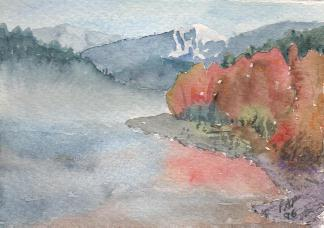
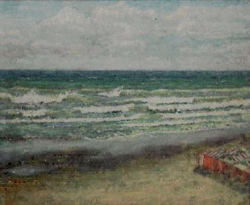
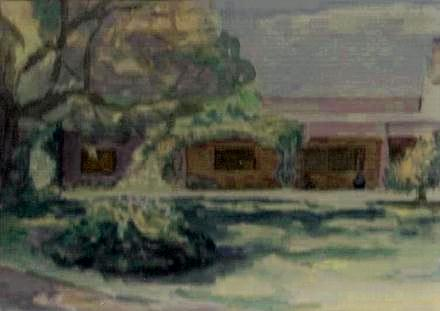
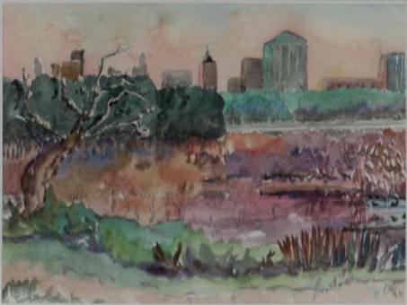
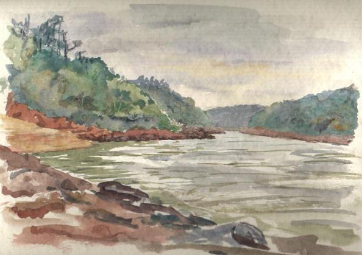

Paisaje imaginario ¿Lago con neblina?
Acuarela - (1996)

El balneario de Miramar
(La falta de nitidez se debe a un defecto en el proceso de escaneo)
Oleo (1975?)

Casco de la Estancia San Isidro - Magdalena - Prov. de Buenos Aires, Argentina
(La falta de nitidez se debe a un defecto en el proceso de escaneo)
Acuarela (1996)

Memoria de una visita a la reserva Costanera Sur, Ciudad de Buenos Aires
Acuarela (1997?)

Valle del río Iguazú, aguas abajo de las cataratas, al final del sendero "Macuco"
Acuarela (1999)

Casco de Estancia "El Amanecer", a pocos km de Punta Medanosa, al sur de Puerto Deseado
(Prov. de Santa Cruz, Argentina)
Aquí visitó Gerald Durrell - ver su libro "The Whispering Land"
Acuarela (Enero 1999)